Species Distribution Models Application


sdmApp is a R package containing a Shiny application that allows non-expert R users to easily model species distribution. It offers a reproducible work flow for species distribution modeling into a single and user friendly environment. sdmApp takes Raster data (in format supported by the Raster package) and species occurrence data (several format supported) as input argument. This package provides an interactive graphical user interface (GUI). This document will give an overview of the main functionalities of the graphical user interface. The main features of the GUI is:
Uploading data (raster and species occurrence files)
View correlation between raster
Use CENFA to select species predictors
Apply a spatial blocking for cross-validation based on the blockCV package
Apply species distribution models with or without a spatial blocking strategy
Export results
Keep reproduce (R code) by being able do download the underlying code from sdmApp.
The GUI is build around 5 main windows, which can be selected from the navigation bar at the top of the screen. Initially, some of these windows will be empty and their content changes once data (both raster and species occurrence files) have been uploaded.
## Installation To install the package from github use:
remotes::install_github("Abson-dev/sdmApp", dependencies = TRUE)
library(sdmApp)
sdmApp()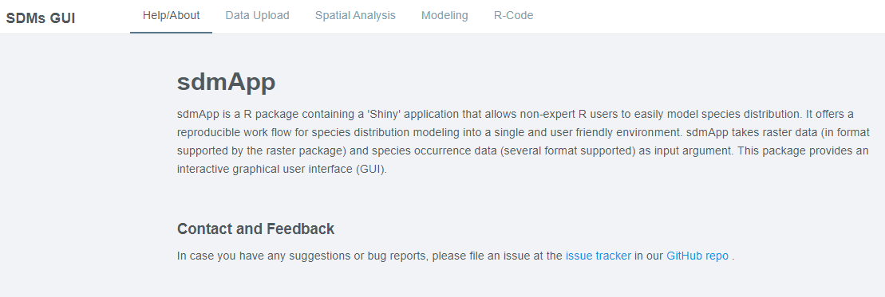
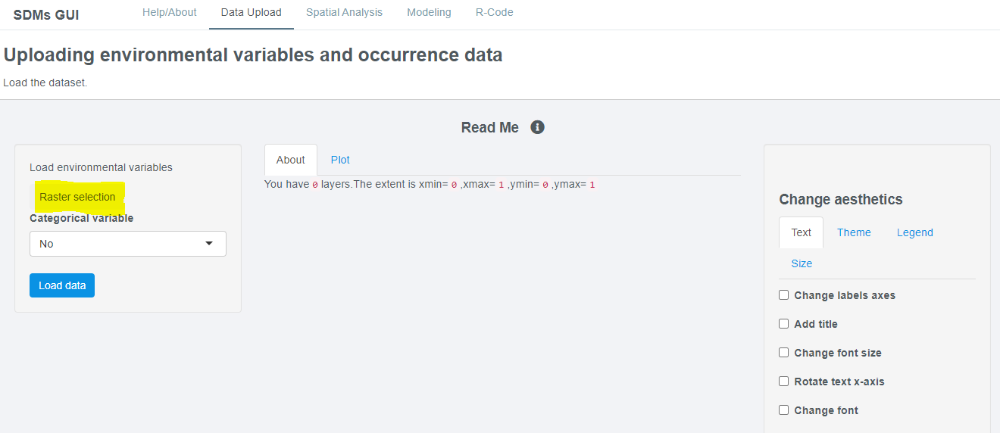
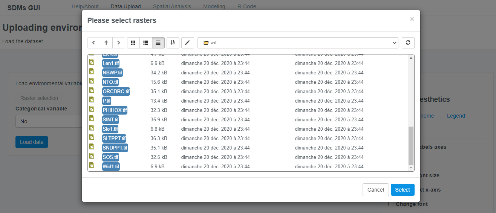
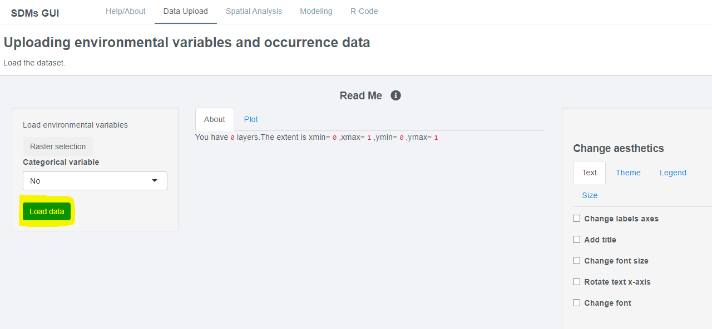
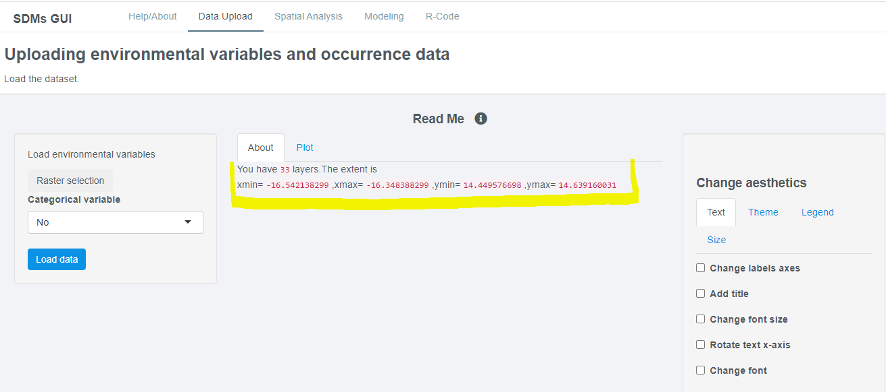
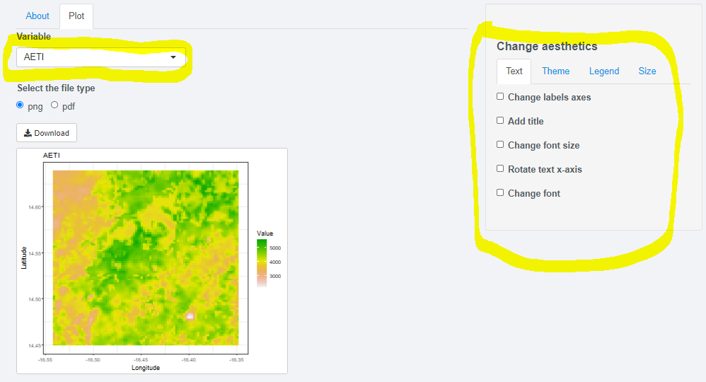
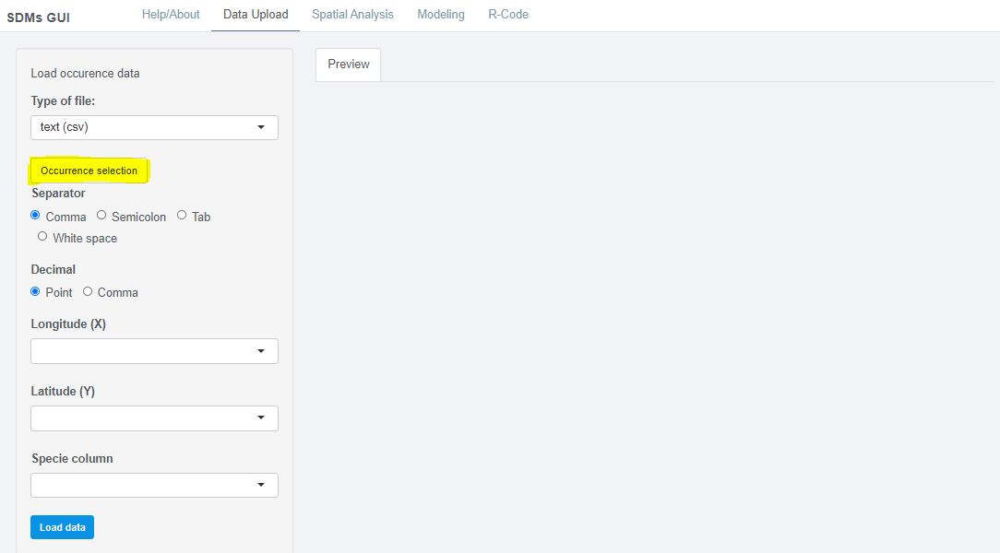
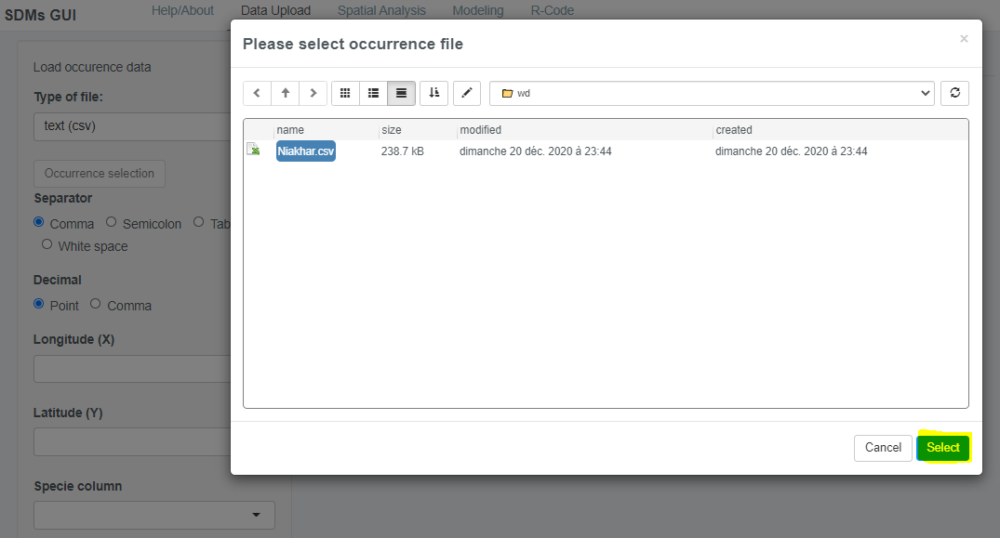
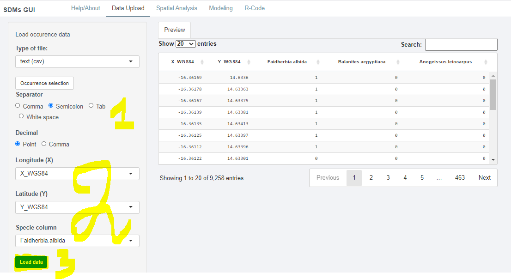
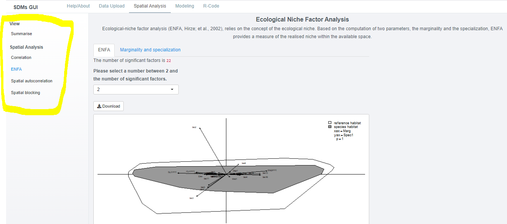
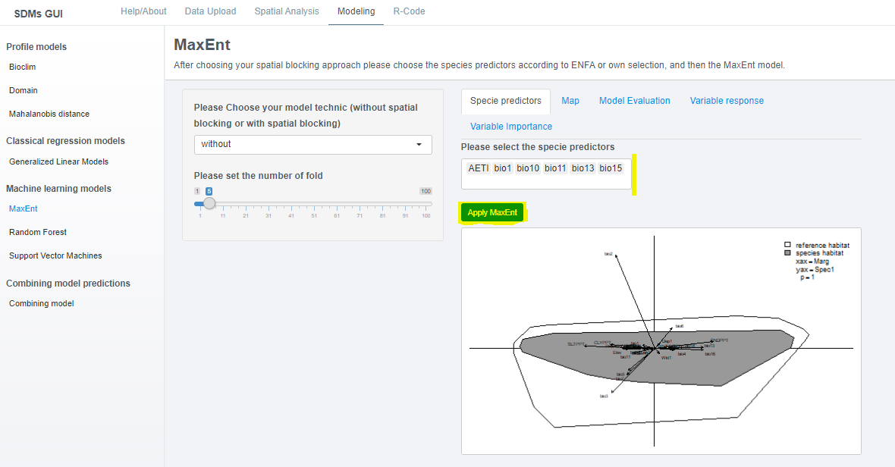
License
The sdmApp sticker was made through R art kindly shared by this link and released under a CC-BY-SA 4.0 license.